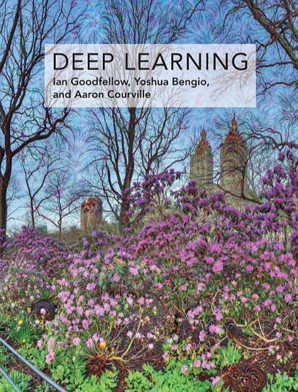

Writing / Book review
Deep Learning by Goodfellow, Bengio, and Courville: Still the Foundation
The canonical deep learning textbook predates transformers, yet its treatment of optimization, regularization, and representation learning explains why modern models work.

- Book
- Deep Learning
- Author
- Ian Goodfellow, Yoshua Bengio, Aaron Courville
- Publisher
- MIT Press, 2016
- ISBN
- 9780262035613
- My rating
- ★★★★½ 4.5/5
VerdictNot a quick read and not about LLMs, but it is the theory base that makes everything after it legible. Read Part II properly once and keep it as a reference forever.
Every few months someone asks whether this book is "still relevant" because it predates the transformer. The answer is yes, because the transformer is assembled from parts this book explains: optimization dynamics, regularization, normalization, skip connections (section 8.6.9 touches on them, and batch normalization gets section 8.7), and representation learning. Even attention appears, briefly, in the applications chapter. What is new since 2016 is how those parts are combined and scaled.
The structure
Why Part II is timeless
Regularization, properly explained
The regularization chapter is the best single explanation of why deep networks generalize at all, and of the tools we use to make them generalize better.
Weight decay and dropout are still in modern LLM training recipes. Early stopping is still the most underrated regularizer in applied ML.
Optimization, from the ground up
The discussion of saddle points, ill-conditioning, and why poor local minima are rarely the real obstacle in high dimensions is a better guide to debugging training runs than most blog posts.
Representation learning
That right column is the conceptual root of every embedding model and every foundation model. The book's chapter on representation learning reads almost like a prophecy.
What is dated
- Attention gets only brief treatment, and there is no transformer, large-scale pretraining, or RLHF.
- The generative-model chapters predate diffusion models.
- Some RNN-heavy material is now mostly historical.
| Part | Relevance for an LLM engineer today |
|---|---|
| Part I: Applied math | High: the notation and tools you will need everywhere |
| Part II: Modern practical networks | Very high: optimization and regularization are unchanged |
| Part III: Research frontiers | Mixed: valuable background, partly historical |
How to read it
Do not read it cover to cover like a novel. It is freely readable online at deeplearningbook.org, which is a gift to the field.
Verdict
4.5 stars. Not where you learn LLMs. Where you learn why LLMs work.

Shivam Negi is an AI engineer and Principal Data Scientist who works on evaluating voice agents, small language models, and applied ML. More about me